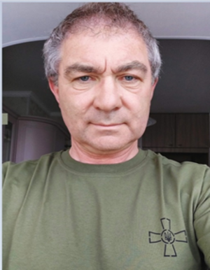

Чепок Андрій Олегович
кандидат фізико-математичних наук, доцент
Основні публікації:
Індексовані в Scopus чи Web of Science:
У наукових виданнях, включених до переліку наукових фахових видань України:
Тези доповідей:
Монографії:
Патент на винахід або корисну модель:
- .
Науковий керівник д/б наукової теми
Участь у науково-дослідних роботах
- NMP Theme: FP7-NMP-2010-SMALL-4, Collaborative project: Full title: Towards efficiency enhancement of hybrid organic solar cells through incorporation of metallic nanostructures; Acronym: PlasmoSolar; Work programme topics addressed: Promising organic and inorganic hybrids, building blocks at the nanoscale, interfaces in hybrids, cost-effective processing technologies, nano-engineered structures. Сoordinating person: Prof. Dr. Daniel M. Schaadt (Karlsruhe Institute of Technology - KIT, Germany)
- Yu. Krasny (Poland), A. Chepok (Ukraine), “High velocity signal spreading through the chain of metallic nanoparticles incorporated into dielectric”, NATO Advanced Research Workshop “NATO ARW CRB.NUKR.ARW 984333”, Nanodevices and Nanomaterials for Ecological Security, Riga – Yurmala – Latvia, June 20-23, 2011
Підвищення кваліфікації, сертифікати:
- Іспит на рівні В2 (Сертифікат тестування з англійської мови на рівні В2 за загальним спрямуванням, спецкурс «Комп’ютер та іноваційні технології») Свідоцтво № 18123 від 10.08.2011 р., Курси іноземних мов «Чкаловські»)
Дисципліни, що викладає:
- Архітектура ЕОМ Робоча програма; Силабус
- Архітектура комп'ютерів та низькорівневе програмування Робоча програма; Силабус
- Комп'ютерна схемотехніка та програмування контролерів Робоча програма; Силабус
- Дисципліна ЛП поточного року №4 Робототехніка та мехатроніка Робоча програма; Силабус
- Комп’ютерна схемотехніка та архітектура комп’ютерівРобоча програма; Силабус